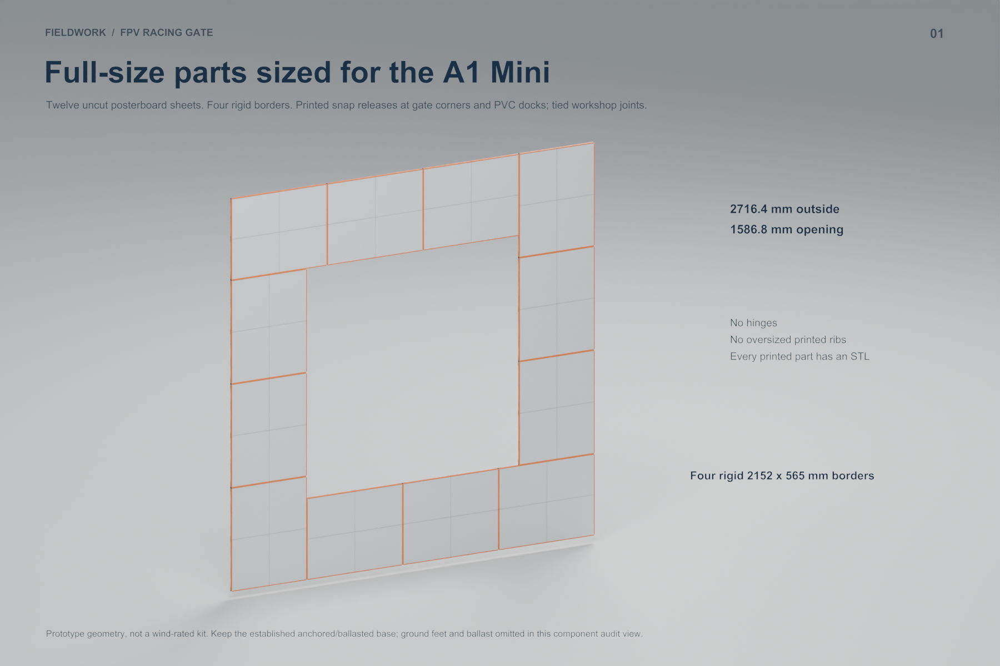
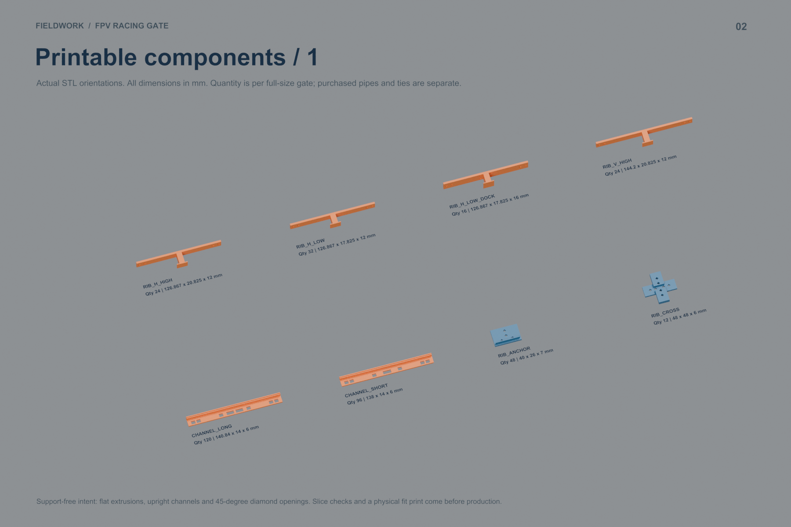
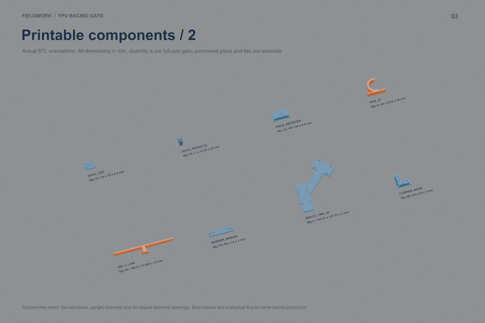
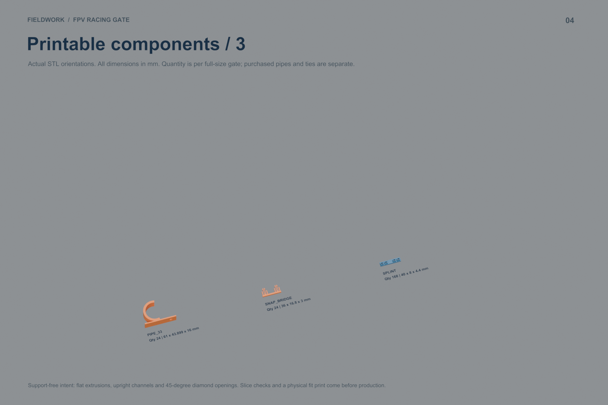
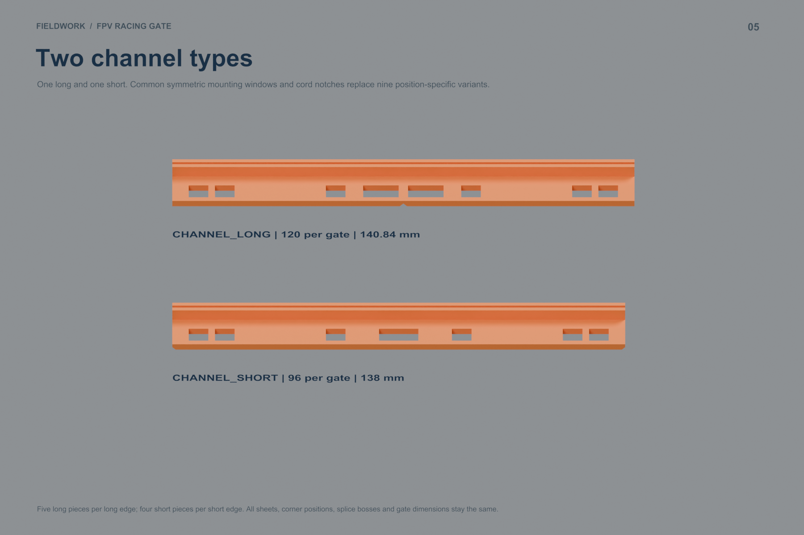
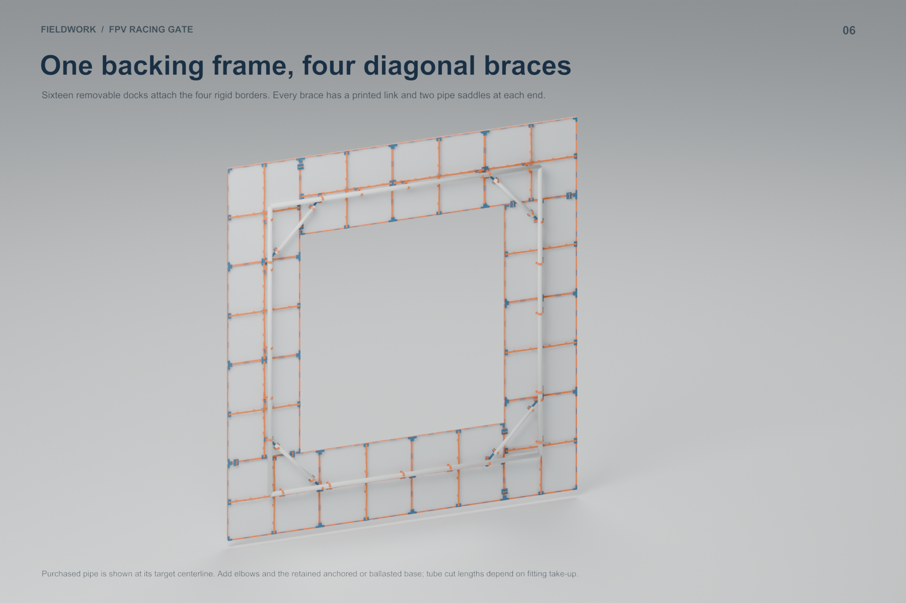
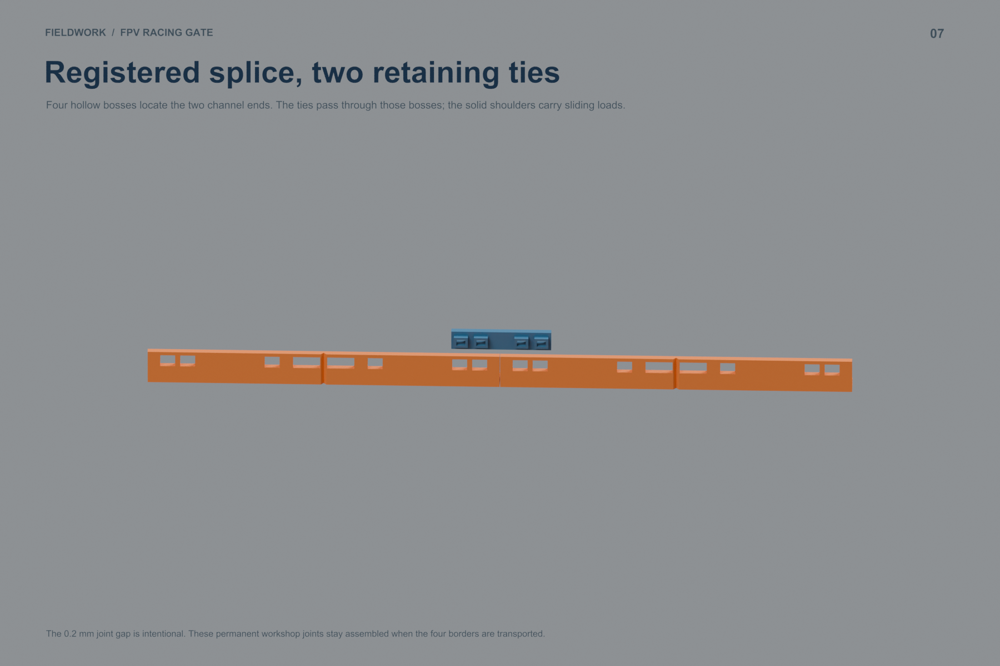
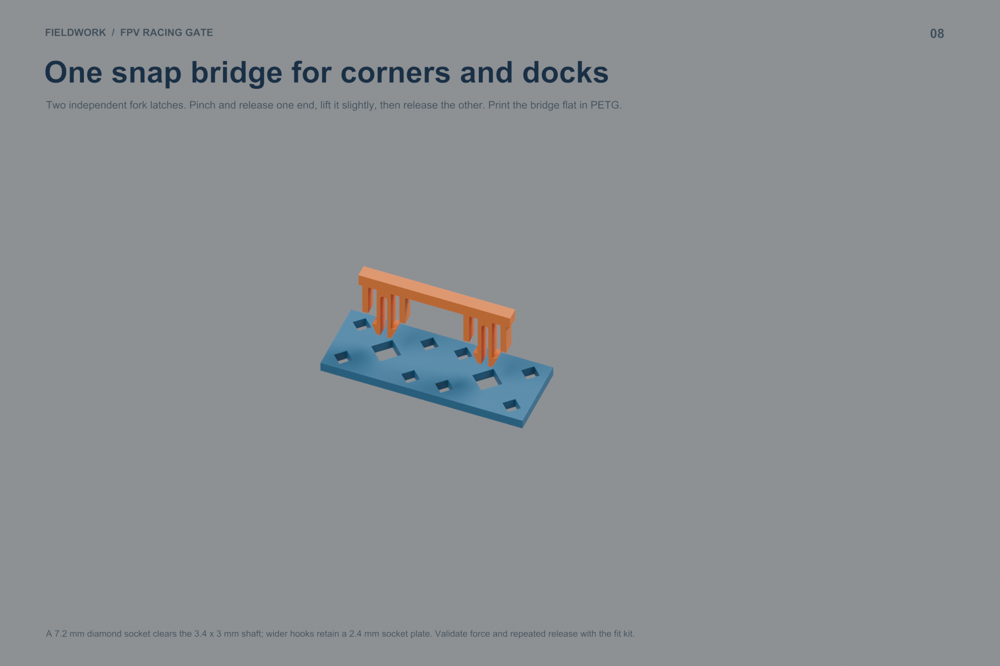
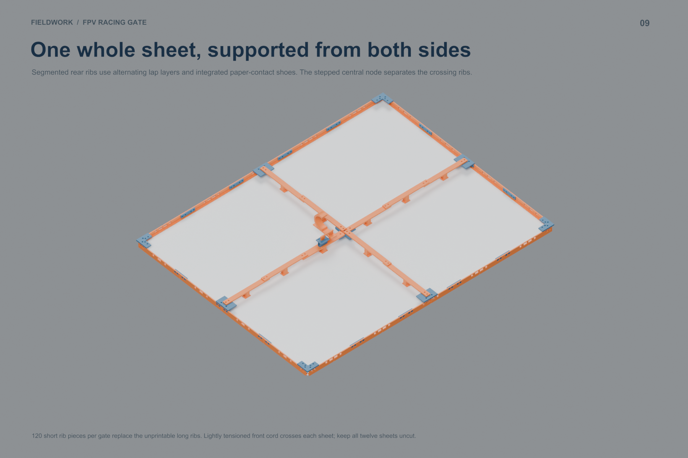
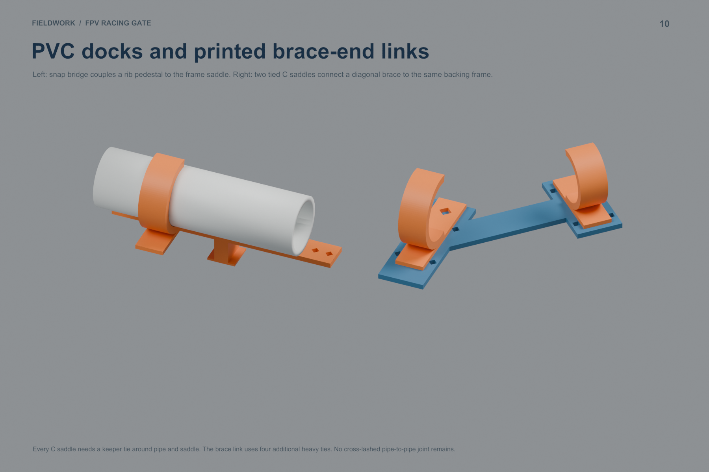

Twelve whole 22 × 28 inch sheets; four rigid 2152 × 565 mm borders; one PVC backing frame with four diagonal braces. 2716.4 mm outside, 1586.8 mm nominal opening.
19 unique types / 740 printed pieces. The longest piece is 144.2 mm. Every unique part fits the A1 Mini without diagonal placement and slices successfully with supports off. Rear ribs now use overlapping short sections; the center cross has two levels. Only two universal channel types remain: 120 long and 96 short. Both use common symmetric mounting features and registered splints with ties. Eight gate-corner keys and sixteen PVC dock keys use the same reversible printed fork bridge.
This is a digital fabrication prototype. Physical fit, snap cycling, assembled rigidity and wind performance remain untested. Workshop joints use ties and stay assembled during transport.
Minimal concept test plate · Parts and test steps
32.4 g PETG / about 95 minutes. Tests paper fit, a straight splice, a frame corner, and a complete snap-on PVC dock. One of each part; reuse the channels between tests.
Sliced 1:1 PETG fit kit for A1 Mini · Geometry-only layout
Twelve actual parts on one plate: about 38.5 g / 113 minutes. A1 Mini, 0.4 mm nozzle, 0.20 mm layers, three walls, 15% infill, Generic PETG, Textured PEI Plate, no supports. Check the settings in Bambu Studio before printing. No job has been sent to a printer.
2.97 kg PETG; 3.26 kg with reserve → four 1 kg spools. Plastic plus paper is about $71.23 consumed at the stated $20/kg and $0.99/sheet assumptions, excluding ties, PVC, bases and labor. Four complete spools plus paper cost $91.88 at those assumptions.
The kit also uses 856 ties. Model-only print estimates sum to roughly 146 hours before batching effects. Whole-sheet yield saves cutting but brings considerable printing and assembly work. The former 1.84 kg schematic estimate is superseded.
| File / part | Per gate | Print X × Y × Z, mm | Download |
|---|---|---|---|
| SPLINT | 168 | 40 × 8 × 4.4 | STL |
| CORNER_NODE | 48 | 34 × 34 × 7 | STL |
| RIB_ANCHOR | 48 | 40 × 26 × 7 | STL |
| RIB_CROSS | 12 | 48 × 48 × 6 | STL |
| BORDER_BRIDGE | 16 | 60 × 12 × 3 | STL |
| FIELD_RECEIVER | 16 | 40 × 24 × 6.4 | STL |
| SNAP_BRIDGE | 24 | 36 × 16.8 × 3 | STL |
| RIB_H_LOW | 32 | 126.867 × 17.825 × 12 | STL |
| RIB_H_LOW_DOCK | 16 | 126.867 × 17.825 × 16 | STL |
| RIB_H_HIGH | 24 | 126.867 × 20.825 × 12 | STL |
| RIB_V_LOW | 24 | 144.2 × 17.825 × 12 | STL |
| RIB_V_HIGH | 24 | 144.2 × 20.825 × 12 | STL |
| PIPE_33 | 24 | 61 × 43.899 × 16 | STL |
| PIPE_27 | 8 | 44 × 35.8 × 16 | STL |
| DOCK_CAP | 16 | 24 × 18 × 2.4 | STL |
| DOCK_PEDESTAL | 16 | 7 × 12.35 × 22 | STL |
| BRACE_LINK_45 | 8 | 103.51 × 127.51 × 3 | STL |
| CHANNEL_LONG | 120 | 140.84 × 14 × 6 | STL |
| CHANNEL_SHORT | 96 | 138 × 14 × 6 | STL |
Purchased fasteners, pipe cutting assumptions, base details and rail variant placement are in the build guide. The view labels refer to exact exported geometry; most purchased ties are omitted for clarity.










Rebuild source and validation scripts are in the repository's scripts directory. This iteration keeps the earlier anchored grass / ballasted hard-floor base arrangement; fitting bodies and bases are omitted in these component views.